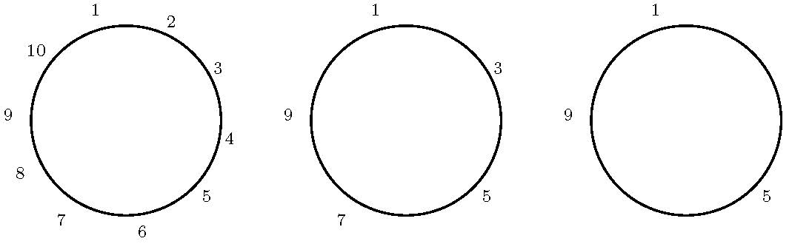
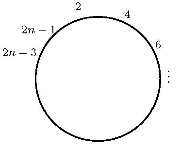

递归问题：约瑟夫问题
目录
1 问题描述
这是一个生死攸关的问题！至于如何生死攸关参见《具体数学》1.3节 The Josephus Problem。现在做如下简化：假设有 \(n\) 个人站成一圈，现在要每隔一个删除一个人，直到只有一个人幸存下来。例如 \(n=10\) 的情形如下：

Figure 1: n=10的约瑟夫问题
消去的顺序是：2,4 6,8,10,3,7,1,9，于是5幸存下来。问题：确定幸存者的号码 \(J(n)\)？
2 约瑟夫问题递归式
因为有 \(J(10)=5\)，所以我们猜测有 \(J(n)= \frac{n}{2}\)，但是一些简单的如同下表的例子否定了这个猜测。
| \(n\) | 1 | 2 | 3 | 4 | 5 | 6 |
|---|---|---|---|---|---|---|
| \({J_{n}}\) | 1 | 1 | 3 | 1 | 3 | 5 |
不过我们可以大胆猜测， \(J(n)\)一定是奇数，因为绕圈走一圈就消去了全部的偶数。如果 \(n\) 是偶数，则走一圈后除了仅剩下一半人口并且他们的号码有变化外，我们面临的情形是与刚开始相同的情形，如下图所示：

Figure 2: n为偶数时的约瑟夫问题
如此，规模为 \(2n\) 问题就变成了规模为 \(n\) 的问题。这个规模为 \(n\) 的问题与原来相比只是在人员的序号上有所不同，具体说来就是除了每个人的号码加倍并减去1外， \(J(2n)\) 问题和 \(2J(n) -1\)问题没有什么区别。即
\begin{equation} \label{eq:1} J(2n) = 2J(n) -1 , n\ge 1 \end{equation}由上文我们知道 \(J(10)=5\)，几乎瞬间我们就会知道 \(J(20)= 2J(10)-1= 2*5 -1 = 9\)。如此可以瞬间解决所有的 \(J(5*2^{m}),m\ge 1\)问题， \(J(5*2^{m}) = 2J(5*2^{m-1}) + 1 = 2*2^{m} +1 = 2^{m+1} +1\)，这一步隐含了数学归纳法的证明过程。
假设 \(n\) 是奇数，与偶数不同的情形在于，转第一圈后就把编号为1的人给杀掉了，第二圈开始是从编号为3的人开始的，第二圈开始后第一个要杀掉的人是5。

Figure 3: n为奇数时的约瑟夫问题
如此， \(J(2n+1)\)问题就简化为 \(2J(n)+1\)问题，即：
\begin{equation} \label{eq:2} J(2n+1) = 2J(n) +1 , n\ge 1 \end{equation}综上，约瑟夫问题递归式可以总结为：
\begin{equation} \label{eq:3} \begin{split} J(1)&=1 \\ J(2n)&=2J(n) -1 \\ J(2n+1)&=2J(n)+1 \end{split} \end{equation}3 约瑟夫递归式的解
从约瑟夫递归式可以看出，不同于汉诺塔和披萨饼问题，约瑟夫问题递归式给出的不是 \(J(n)\) 和 \(J(n-1)\) 之间的递归关系，而是 \(J(2n)\) 或者 \(J(2n-1)\) 与 \(J(n)\) 之间的关系。
有了递归式，我们计算一些较小的值
| \(n\) | 1 | 2 | 3 | 4 | 5 | 6 | 7 | 8 | 9 | 10 | 11 | 12 | 13 | 14 | 15 | 16 |
|---|---|---|---|---|---|---|---|---|---|---|---|---|---|---|---|---|
| \(J_{n}\) | 1 | 1 | 3 | 1 | 3 | 5 | 7 | 1 | 3 | 5 | 7 | 9 | 11 | 13 | 15 | 1 |
显然，从上面的表格中可以看出，将 \(n\) 按照 2的幂次进行分组或许会出现一些转机。每一组开始的 \(J(n)\) 总是等于1。仔细观察上表，如果将 \(n\) 写作 \(2^{m}+l\)，则 \(J(n)=J(2^{m}+l) = 2l +1, m\ge 0\le l < 2^{m}\). 其中 \(2^{m}\)是不超过 \(n\) 的 \(2\)的最大幂，而 \(l=n-2^{m}\)。事实上，可以对 \(m\) 使用数学归纳法证明：
\begin{equation} \label{eq:4} J(n)=J(2^{m}+l) = 2l +1, m\ge 0\le l < 2^{m} \end{equation}如此，我们得出了约瑟夫问题的闭式解。对于 \(J(100)\) 因为 \(100=2^{6}+36\)，所以 \(J(100)=2*36 +1= 73\)
4 拓展1:二进制与约瑟夫问题
接下来我们针对约瑟夫问题做一些深入的挖掘。在求解约瑟夫问题递归式闭式解的过程中， \(n\) 和 \(J(n)\) 的以2为基的表示发挥着重要的作用，我们自然要研究以2为基的表示与约瑟夫问题之间的关系。假设 \(n\) 的二进制表示为：
\begin{equation} \label{eq:5} n = (b_{m}b_{m-1}\ldots b_{1}b_{0})_{2} \end{equation}即， \(n = b_{m}2^{m} + b_{m-1}2^{m-1} + b_{1}2 + b_{0}\)，其中 \(b_{i}, i=0,1,\ldots,m-1\) 为 \(0\) 或者 \(1\)。 \(b_{m}=1\)，注意 \(n=2^{m}+l\)，所以：
\begin{eqnarray} \label{eq:6} n & = & (1b_{m-1}\ldots b_{1}b_{0})_{2} \\ l & = & (0b_{m-1}\ldots b_{1}b_{0})_{2} \\ 2l& = & (b_{m-1}\ldots b_{1}b_{0}0)_{2} \\ 2l+1& = & (b_{m-1}\ldots b_{1}b_{0}1)_{2} \\ J(n) & = & (b_{m-1}\ldots b_{1}b_{0}b_{m})_{2} \end{eqnarray}即，我们得到了：
\begin{equation} \label{eq:7} J((b_{m}b_{m-1}\ldots b_{1}b_{0})_{2}) = (b_{m-1}b_{m-2}\ldots b_{1}b_{0}b_{m})_{2} \end{equation}在计算机程序设计过程中，只需要对 \(n\) 的二进制表示循环左移1位即可得到 \(J(n)\)!!!这是多么的令人激动啊！在刚开始的时候，我们看约瑟夫问题显得好困难，但是，此刻我们只需要对\(n\) 的二进制表示循环左移1位即可得到 \(J(n)\)!!! 对一个问题深入分析竟然可以得到如此精妙而简洁的答案！高老头不愧是高老头！
还以 \(J(100)\) 为例， 因为 \(100=(1100100)_{2}\)，所以 \(J((1100100)_{2}) = (1001001)_{2} = 73\) !!!
5 拓展2:更一般的约瑟夫递归式
接下来跟进一步深入挖掘该问题，对约瑟夫递归式做更进一步的推广。如下：
\begin{equation} \label{eq:8} \begin{split} f(1) &= \alpha \\ f(2n) &= 2f(n) + \beta \\ f(2n+1) &= 2f(n) + \gamma \end{split} \end{equation}可以看出在约瑟夫问题中， \(\alpha=1,\beta=-1,\gamma=1\)。接下来，我们依然从小入手，得出下表
| n | \(f(n)\) |
|---|---|
| 1 | α |
| 2 | 2α+β |
| 3 | 2α+ +γ |
| 4 | 4α+3β |
| 5 | 4α+2β+γ |
| 6 | 4α+β+2γ |
| 7 | 4α+ +3γ |
| 8 | 8α+7β |
| 9 | 8α+6β+γ |
从上表我们可以看出， α 的系数是2的幂，且不超过n。 β 的系数则从2的幂减一递减到0，γ 的系数则从0开始递增直到2的幂减一。于是式(\ref{eq:1})的解可以表示为：
\begin{equation} \label{eq:9} f(n) = A(n) \alpha + B(n) \beta + C(n) \gamma \end{equation}则， \(A(n),B(n),C(n)\)可以分别表示为：
\begin{equation} \label{eq:10} \begin{split} A(n) &= 2^{m} \\ B(n) & = 2^{m} -1 -l \\ C(n) & = l \end{split} \end{equation}其中， \(n = 2^{m}+l, 0\le l < 2^{m},n\ge 1\). 对式(\ref{eq:9})用数学归纳法可以证明。
联想到之前采用二进制表示约瑟夫问题的解：
\begin{equation} \label{eq:11} J((b_{m}b_{m-1}\ldots b_{1}b_{0})_{2}) = (b_{m-1}b_{m-2}\ldots b_{1}b_{0}b_{m})_{2} \end{equation}\(n\) 的循环左移即是 \(J(n)\) 的解。那么对于式(\ref{eq:11}) 这个更一般的推广，有没有二进制表示呢？ 当然有！ 首先式（\ref{eq:11}） 可以改写为：
\begin{equation} \label{eq:12} \begin{split} f(1) &= \alpha \\ f(2n +j) &= 2f(n) +\beta_{j}, j=0,1 \end{split} \end{equation}则式(\ref{eq:12})可以改写为：
\begin{equation} \label{eq:13} \begin{split} f((b_{m}b_{m-1}\ldots b_{1}b_{0})_{2}) &= 2f((b_{m}b_{m-1}\ldots b_{2}b_{1})_{2}) + \beta_{b_{0}} \\ &= 4f((b_{m}b_{m-1}\ldots b_{3}b_{2})_{2})+ 2\beta_{b_{1}} + \beta_{b_{0}} \\ &= 8f((b_{m}b_{m-1}\ldots b_{4}b_{3})_{2})+ 4\beta_{b_{2}} + 2\beta_{b_{1}} + \beta_{b_{0}} \\ & \vdots \\ &= 2^{m}f((b_{m})_{2}) + 2^{m-1}\beta_{b_{m-1}} + \ldots + 2\beta_{b_{1}} + \beta_{b_{0}} \\ &= 2^{m} \alpha + 2^{m-1}\beta_{b_{m-1}} + \ldots + 2\beta_{b_{1}} + \beta_{b_{0}} \end{split} \end{equation}最后，可得：
\begin{equation} \label{eq:14} f((b_{m}b_{m-1}\ldots b_{1}b_{0})_{2}) = (\alpha\beta_{b_{m-1}}\beta_{b_{m-2}}\ldots \beta_{b_{1}}\beta_{b_{0}})_{2} \end{equation}事实上我们对 \(f(n)\)的前几个解稍加整理即可看出式 (\ref{eq:14}) 的精妙。如下表
| n | \(f(n)\) |
|---|---|
| 1 | α |
| 2 | 2α +β |
| 3 | 2α +γ |
| 4 | 4α + 2β + β |
| 5 | 4α + 2β + γ |
| 6 | 4α + 2γ+β |
| 7 | 4α + 2γ+γ |
在此， 我们有 \(\beta_{0} = \beta , \beta_{1} = \gamma\). 仍然以 \(J(100)\) 为例，因为 \(100 = (1100100)_{2}\)， 其解为：
\begin{equation} \label{eq:15} (\alpha\beta_{b_{m-1}}\beta_{b_{m-2}}\ldots \beta_{b_{1}}\beta_{b_{0}})_{2} = ( 1 \beta_{1} \beta_{0}\beta_{0} \beta_{1}\beta_{0}\beta_{0})_{2} \end{equation}因为 \(\alpha = 1, \beta_{0}=\beta = -1, \beta_{1}=\gamma=1\) ，所以 式(\ref{eq:15})可以重写为：
\begin{equation} \label{eq:16} ( 1 \beta_{1} \beta_{0}\beta_{0} \beta_{1}\beta_{0}\beta_{0})_{2} = (1\quad 1\quad -1\quad -1\quad 1\quad -1\quad -1)_{2} = 73 \end{equation}注意在此，我们突破了二进制只有0和1的限制，不过这一突破使得约瑟夫的解更加的精炼。
6 推广3:不同基底的约瑟夫递归式
可以沿着推广2的思路走的更远，我们对式(\ref{eq:12}) 做更进一步修改：
\begin{equation} \label{eq:17} \begin{split} f(j) &= \alpha_{j}, 1\le j < d \\ f(dn+j)&= c f(n) +\beta_{j}, 0\le j < d \end{split} \end{equation}式(\ref{eq:17})有变动基数的解：
\begin{equation} \label{eq:18} f((b_{m}b_{m-1}\ldots b_{1}b_{0})_{d}) = (\alpha_{b_{m}} \beta_{b_{m-1}} \beta_{b_{m-2}} \ldots \beta_{b_{1}} \beta_{b_{0}})_{c} \end{equation}7 推广4:倒数第二个位置
约瑟夫有一个朋友，他站在倒数第二个位置上因而获救。当每隔一个人就有一个人被处死时，倒数第二个幸存者 \(I(n)\) 的号码是多少？
每隔一个人就有一个人被处死的约瑟夫问题解为：
\begin{equation} \label{eq:19} J(n) = J(2^{m} +l) = 2l +1 \end{equation}此时有： \(2l +1 = n-1 \rightarrow n=2l +2\) ，满足此式的 \(n\) 总是倒数第二个位置上的人获救。\(a_{k}\)